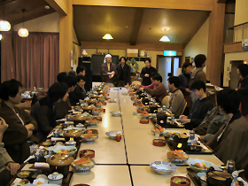

RubySpaMeeting2006 #

We have, right now, an over-night offsite meeting at a spa in Matsue, where Matz lives. 20 Rubyists comes here, including Matz and a few NaCl’s staff, Nakada-san, Sasada-san, Takahashi-san and many.
Takahashi-san discussed the details of Japan Ruby Conference 2006, which will be hold at June, a renewal plan of Ruby Reference manual and so forth. The new one with a steady, common format which is refe and ri friendly will come out at July.
Matz has decided a release plan for some Ruby 2.0 features.
- YARV will be merged into Ruby 1.9 at Feb 14, Saint Valentine’s Day.
- He has fixed the SelectorNamespace specification, however, which is only in his mind now.
- The multi language support, which he has implemented almost completely, will be shortly committed with a CVS tag. Be careful that it breaks the compatibility of Marshal.
- Generational GC will NOT be included in Ruby 2.0 unless somebody tries to build.
^_^
oooo Yarv.
Danno
And selector namespaces and multi-language support, oh my!
slyphon
AWESOME! Way to go guys!
Now we can finally stop asking you “What’s going on with YARV ?” =)
corvid
rats, I can’t get yarv-3.3.0 to compile (fails at the link stage with thread.o). :(
Mr. Big
multi language support → Is this unicode support, or does Ruby now run Perl and Python code now ><
Mr. Big
- now
Ezra
Wow yarv in 1.9 on valentines day! Thats sweet. Is it compatible with all the 1.9 syntax or are there some things missing still?
Joao
Great news! :-)
I love so much Ruby and Matz and all the developers and users of Ruby that, that, that…
Awesome gems you all are.
typo in article: Mershal should be Marshal. FOR -SHAME.
why
All the Greats, sittin in bubbles and salts, havin a schvitz. This is just what 1.9 needs. You guys have a good night at the RelaxFest, Daigo.
riffraff
corvid, try the svn version, I have it working with gcc on ubuntu and win32. And now it runs a large parte of “make test-all” : ~400 tests plus yarv’s own ones.
Nice, ain’t it?
riffraff
forgot to say: thanks for the report daigo!
Branstrom
What’s YARV ?
gmosx
Great news ;-)
toby
How about something even better than generational GC, e.g. incremental tri-color write barrier GC (a la Io)? Any plans for a non-pausing GC? Or just the same old mark-sweep action?
Jon
Matz lives in a spa? Sweet!
riffraff
toby: I think that incrementality is ortoghonal to “generationality”, the former is relative to how you cleanup the stuff (a lil bit at a time or pausing or concurrently) the latter to how you find stuff. It seem to me that saying that Io’s GC is tri-color basically means that it works with three generations.
Anyway, I wonder if we could provide a—enable-bohem-gc switch, since it is now bundled with a lot of other projects (gcj, gnu ObjC, mono, various lisps/schemes, even W3M :), and IIRC it is an incremental generational compacting collector with impressive performance.
ko1
The very important fact: I have gotten drunk very much ;-)
Danno
What’s Ruby’s official alcoholic beverage?
Zeljko
Sake?
kode
yes, but not just any sake.
Danno
It would be a good idea to get some word from Matz about what type of sake we should drink when a Ruby based product ships/hits 1.0/we feel like getting “crunk”, as it were.
ko1
I love sake. Matz and some rubyists don’t drink.
toby
riffraff: Boehm GC is mark-sweep, just like Ruby’s. See this page for more info on libboehm. In addition, the term tri-color does not indicate generationality of the garbage discovery, but rather it is a marking technique that is fundamental to incremental GC. Check out this synopsis for more info on that and other GC techniques (great site, right there).
I only ask about incremental GC because its taken Java so long to get generational GC to the point where I don’t want to stab Gosling with a #2 Dixon-Ticonderoga every time I fire up a JVM and I don’t want that to happen to Ruby. In addition, Perl and Python use simple reference counters and Io does the incremental thing, as I’ve said. (I wonder what Lua uses?) I would lean towards simple and effective versus generational GC for YARV /Ruby 2.0.
daigo
There are less drinkers and smokers in Japanese Rubyists than Japanese average. At that dinner a half of people including Matz and me did not drink at all (we had a little drink fee in the bill). And we had one or two smokers.
I hear that industries with the high ratio of smokers is likely to wear suits.
MenTaLguY
Having had a lot of experience with it in Inkscape, I don’t see that the Boehm collector would necessarily present an advantage over Ruby’s current one; it would need to be even more conservative than Ruby’s current mostly-precise setup (IIRC, Ruby is only conservative about scanning the stack/registers).
corbanbrook
Corvid, make sure to
./configure—enable-pthread
when compiling the rite version of yarv
jvoorhis
“What’s Ruby’s official alcoholic beverage?”
I think the answer is clear.
jakdak
is this what you drink after converting something from Java ?
moi
i think i’ve heard that ocaml has a pretty nifty GC. Any expert info on that here?
riffraff
Comments are closed for this entry.